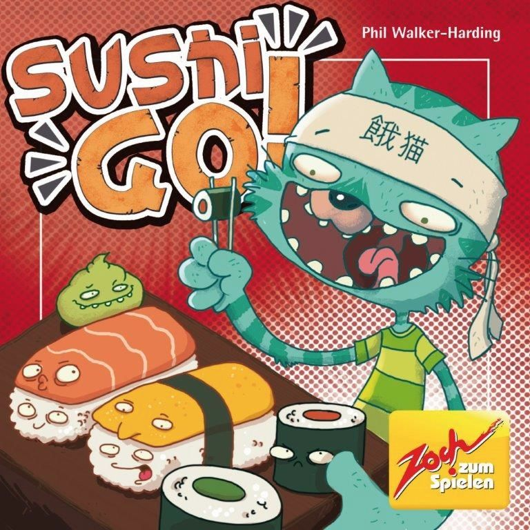

Publishing Info
- Published by: Gamewright
- Developed by: Phil Walker-Harding
- Released: 2013

Description
In the super-fast sushi card game Sushi Go!, you are eating at a sushi restaurant and trying to grab the best combination of sushi dishes as they whiz by. Score points for collecting the most sushi rolls or making a full set of sashimi. Dip your favorite nigiri in wasabi to triple its value! And once you've eaten it all, finish your meal with all the pudding you've got! But be careful which sushi you allow your friends to take; it might be just what they need to beat you!
Game Categories
- Type: Family
- Mechanism: Closed Drafting, Simultaneous Action Selection
- Reimplemented by: Sushi GO Party!, Sushi Roll
Quote
"Fun and clever setting. Tight design hides subtlety in playing several mini-games at once, including the deck composition and player tendencies. Alarmingly resilient at different player counts. Cheap. A must-have for modern family gaming. - Alex Brown"